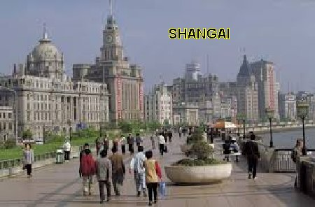
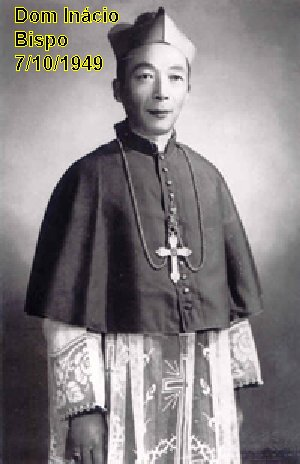
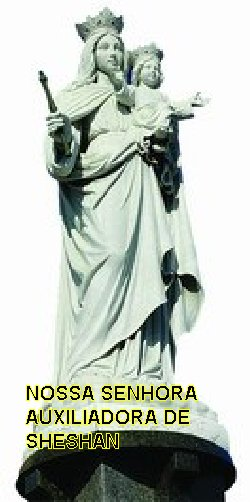
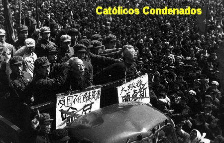
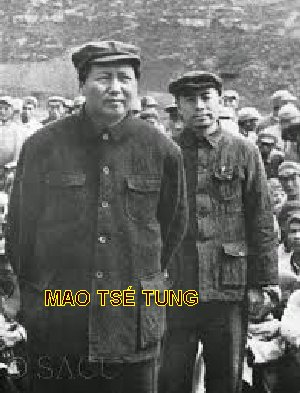

MODÉSTIA E FIDELIDADE
HISTÓRIA
Inácio Kung Pin-Mei nasceu em
Pudong, um modesto distrito rural de Shangai, na China, no dia 2 de Agosto de
1901. Shangai era o maior centro comercial e principal porto da China situado as
margens do Rio Yangtze.
Seus pais eram católicos e
descendiam de gerações de católicos, e no povoado de Pudong ele se sentia muito
orgulhoso da bonita Igreja em estilo gótico que existia dedicada a NOSSA SENHORA
DE LOURDES, a qual tinha capacidade para aproximadamente duas mil pessoas. Seus
pais, além dele tiveram mais dois filhos homens e uma menina, e todos receberam
a primeira educação em casa, como era o costume na época.
Durante os tempos das
perseguições, em que os Conventos e Mosteiros das diversas Ordens Religiosas
foram fechados, originou-se no seio das famílias católicas a instituição das
“Virgens Educadoras”
, que eram mulheres solteiras que consagravam suas vidas
a Igreja. Elas desempenhavam um serviço importante: cuidavam das Capelas, se encarregavam
da instrução religiosa das crianças cristãs, conduziam as orações durante as Santas
Missas e em outras cerimônias, e davam assistência aos Clérigos itinerantes. As
“Virgens” (como eram denominadas) viviam com as suas famílias
ou em pequenas comunidades numa casa residencial, num
bairro.
Inácio, sempre agradeceu ao
SENHOR aquela inicial educação que recebeu da “tia Marta”,
que orientou o seu espírito e teve significativa importância na sua futura
vocação sacerdotal. Depois fez o Curso Primário a partir dos 8 anos de idade,
com os Irmãos Maristas. E também, foi um Irmão Marista que o preparou para
a Primeira Comunhão. Com a idade de 12 anos entrou para o Curso
Secundário dirigido pelos Padres Jesuítas em Shangai.
PADRE E PROFESSOR
Aos 19 anos de idade ingressou
no Seminário Diocesano em Shangai, fazendo com competência e brilhantismo todos
os estudos eclesiásticos, sendo ordenado sacerdote no dia 28 de Maio de 1930,
aos 29 anos de idade.
Como jovem Sacerdote, o Padre
Inácio Kung durante vários anos se dedicou ao ensino como professor em Escolas
Católicas, lecionando Latim. Foi também Diretor de duas Escolas Secundárias
Jesuítas em Shangai: Ginásio Aurora e Ginásio Gonzaga.
ARDOROSO BISPO

No dia 9 de Junho de 1949,
quando os Comunistas estavam tomando o poder na China, ele foi nomeado Bispo na
cidade de Suzhou (Soochow), a 70 km de Shangai. Como sempre foi muito devoto de
NOSSA SENHORA, pediu especial permissão dos Administradores Católicos, para que
sua sagração fosse adiada por cinco meses, de maneira a coincidir com a Festa de
NOSSA SENHORA DO ROSÁRIO no dia 7 de Outubro. E assim aconteceu. E para a
realização deste importante evento da sua vida, ele se preparou dignamente com
um meticuloso retiro espiritual de 30 dias, para acolher amorosamente e conhecer
plenamente a Vontade de DEUS, naqueles tempos tão conturbados no seu país.
Por suas especiais qualidades,
no dia 15 de Junho de 1950, foi transferido para a Diocese de Shangai,
permanecendo como o primeiro Bispo Nativo, e também, acumulando o Cargo de
Administrador Apostólico de Suzhou e de Nanquim, importante centro da industria
têxtil, também situada as margens do Rio Yangtze, um pouco mais distante, ou seja,
a 260 Km de Shangai.
Deste modo, Dom Inácio Kung
tornou-se o Bispo de três importantes cidades da China, num momento crucial para
a história da Igreja Católica no país. Foi uma época terrível, que seu grande
amigo Dom Domingos Tang, Arcebispo de Cantão, descreveu assim:
“O ateísmo espalhou-se como fogo.
Muitos Padres, no norte da China, foram presos. A maior parte dos Bispos,
Sacerdotes e os Religiosos estrangeiros foram expulsos do país. Por essa razão,
olhando com os olhos humanos, o futuro da Igreja Católica na China não oferecia
nenhuma esperança e só de imaginar o que poderia acontecer, causava muito
horror”.
E Dom Inácio, logo depois da sua
posse, prevendo as tribulações que fatalmente iam acontecer, exortava seus fiéis
à perseverança: “São
numerosos os motivos de temor diante de meu fardo episcopal. Vós sereis o meu
cérebro, vós sereis os meus braços. O inimigo do gênero humano e seus satélites,
sem dúvidas, irão procurar me separar de vós, ou pelo menos, debilitar a nossa união.
Mas seus esforços serão em vão: as portas do inferno não vencerão”.
A LEGIÃO DE MARIA
Logo no inicio do seu
episcopado, ele pediu ao Padre W. Aedan, representante da
“Legião de MARIA”, que fundasse algumas unidades na cidade. E o povo católico
acolheu com muita ternura e amor, em pouco tempo a “Legião” se alastrou
por todas as Escolas Católicas da região e nelas foram inscritos mais 95% do número
de alunos do Curso Secundário. A reação chinesa não demorou. Na continuidade,
centenas de membros legionários, inclusive muitos estudantes, foram aprisionados
e sentenciados a 10, 15 e até 20 anos de trabalhos forçados. Em Outubro de 1951,
os jornais chineses publicaram com destaque, fortes ataques contra a
“Legião de MARIA”, dizendo: “que seus membros eram lacaios
(cachorrinhos de estimação)
dos Estados Unidos, imperialistas sob a capa da religião cristã, sendo também
uma organização anti-revolucionária e subversiva que deveria ser
extinta”.
fundasse algumas unidades na cidade. E o povo católico
acolheu com muita ternura e amor, em pouco tempo a “Legião” se alastrou
por todas as Escolas Católicas da região e nelas foram inscritos mais 95% do número
de alunos do Curso Secundário. A reação chinesa não demorou. Na continuidade,
centenas de membros legionários, inclusive muitos estudantes, foram aprisionados
e sentenciados a 10, 15 e até 20 anos de trabalhos forçados. Em Outubro de 1951,
os jornais chineses publicaram com destaque, fortes ataques contra a
“Legião de MARIA”, dizendo: “que seus membros eram lacaios
(cachorrinhos de estimação)
dos Estados Unidos, imperialistas sob a capa da religião cristã, sendo também
uma organização anti-revolucionária e subversiva que deveria ser
extinta”.
Os legionários foram intimados a
denunciar a “Legião”
, e a se registrar na repartição competente no seu
bairro. Todavia as legionárias com muita coragem escreveram:
“Sob a proteção Divina e de nossa
SANTA MÃE, assim como, com a sólida liderança do Bispo Kung, a maioria dos
legionários se recusaram a registrar. Muitos perderam seus empregos e foram
expulsos das Escolas. Algumas famílias foram exiladas em províncias remotas e
áridas, para nunca mais voltar. Contudo, a maioria dos legionários se mantiveram
firmes, escolheram sofrer por amor e pela fidelidade a DEUS”.
A “Legião de Maria”
foi fechada. Houve prisões em quantidade entre católicos chineses e clero estrangeiro,
havendo torturas, calúnias, julgamentos e sentenças capitais. No fim do ano 1951, vinte
e dois Bispos foram presos e catorze deles expulsos, juntos com 1.136 missionários
estrangeiros.
HOMEM DE FIBRA
Dom Inácio vivia preocupado com
os fatos que aconteciam e se desdobrava em atitudes, orações e providências, sem
nunca deixar o seu rebanho desatendido. O zeloso Bispo organizou os rapazes e as
moças que tinham zelado pela
“Legião”, constituindo grupos de estudos
religiosos, para catecismo. Para fortalecer suas vidas espiritualmente, diante
de tantas maldades, covardias e sofrimentos, propôs-lhes a meditação
e primordialmente as Santas Missas diárias.
Alguns antigos membros da
“Legião de MARIA” afirmariam mais tarde: “Durante esses dificílimos anos, o Bispo Kung preparou-nos vigorosamente para
nossa atividade na Diocese: ele nos ensinou e nos encorajou com o seu próprio exemplo.
Nunca deixou o seu rebanho desatendido. Os Padres e os fiéis o seguiam. A Diocese
de Shangai deu um exemplo admirável de plena fidelidade à Santa Sé e à Igreja
Universal”.
CONSAGRAÇÃO A NOSSA SENHORA
 Dom Inácio vendo que o cerco
aos católicos ia se estreitando, no ano 1952 promulgou em sua Diocese um Ano
Mariano, para promover maior devoção a NOSSA SENHORA e ao Rosário. Então, também
consagrou a sua Diocese ao IMACULADO CORAÇÃO DE MARIA. E com o objetivo de
preparar os seus diocesanos para essa consagração, ele escreveu uma Carta
Pastoral explicando:
“Recomendo que as famílias se unam diariamente na recitação do Rosário e tirem
daí uma lição diária de doutrina cristã. Já mostramos como as orações do Rosário
lembram as principais verdades de nossa fé. Desejamos que todos os dias, nas
famílias de nossa Diocese, o pai, a mãe, ou um dos filhos, explique, um para os
outros, o significado do Sinal da Cruz, a Oração da Ave Maria, a Oração do Pai
Nosso, e cada um dos doze artigos do Credo dos Apóstolos. Essa renovação na vida
religiosa e na Devoção Mariana em toda a Diocese, e em cada uma das famílias,
certamente acontecerá pelas Mãos Maternais de MARIA, nossa MÃE e Medianeira,
derramando em todos abundantes graças espirituais e temporais”.
Dom Inácio vendo que o cerco
aos católicos ia se estreitando, no ano 1952 promulgou em sua Diocese um Ano
Mariano, para promover maior devoção a NOSSA SENHORA e ao Rosário. Então, também
consagrou a sua Diocese ao IMACULADO CORAÇÃO DE MARIA. E com o objetivo de
preparar os seus diocesanos para essa consagração, ele escreveu uma Carta
Pastoral explicando:
“Recomendo que as famílias se unam diariamente na recitação do Rosário e tirem
daí uma lição diária de doutrina cristã. Já mostramos como as orações do Rosário
lembram as principais verdades de nossa fé. Desejamos que todos os dias, nas
famílias de nossa Diocese, o pai, a mãe, ou um dos filhos, explique, um para os
outros, o significado do Sinal da Cruz, a Oração da Ave Maria, a Oração do Pai
Nosso, e cada um dos doze artigos do Credo dos Apóstolos. Essa renovação na vida
religiosa e na Devoção Mariana em toda a Diocese, e em cada uma das famílias,
certamente acontecerá pelas Mãos Maternais de MARIA, nossa MÃE e Medianeira,
derramando em todos abundantes graças espirituais e temporais”.
Desse modo, em meio às
perseguições, houve a recitação do Rosário ininterruptamente durante 24 horas
diante da imagem de NOSSA SENHORA DE FÁTIMA, que estava percorrendo as Paróquias
de Shangai.
Quando a venerada imagem chegou
à Igreja de CRISTO REI, onde o maior número de prisões de Sacerdotes tinha
ocorrido apenas há um mês, Dom Inácio Kung dirigiu o Rosário, enquanto centenas
de soldados armados vigiavam. No fim do Rosário o prelado pediu à MÃE DE DEUS:
“SANTA MÃE, não VOS pedimos
um milagre. Não VOS pedimos que parassem as perseguições. Mas VOS pedimos que
nos amparassem, porque nós somos muito fracos”.
ATIVIDADE IMPRESSIONANTE
Sua intensa atividade Pastoral
fez da sua Diocese um modelo para todas as outras. Sob a sua liderança a
Diocese
de Shangai floresceu e se tornou cheia de vida. Ele era firme e atencioso. Ele
deu tudo o que tinha para a salvação das almas e a maior glória de DEUS. O nome
do Bispo Kung se espalhou por toda a China. Todas as Dioceses foram então
modeladas segundo o trabalho da Diocese de Shangai. Particularmente ele era
amado e admirado pelos jovens, estudantes universitários e secundários.
Falando sobre os tempos das
provações, à revista Americana “Soul” escreveu as palavras de Dom Inácio
Kung: “O Governo Comunista
esperava que aprisionando o clero católico, esmagando a Igreja financeiramente
e a isolando da Igreja Universal, ia colocá-la de joelhos e submissa. Mas ocorreu
o contrário, a maior parte do clero e dos fieis estava pronta a carregar sua cruz
até o calvário. Muitos fiéis católicos seguiram o heróico exemplo dos sacerdotes
e religiosos, e escolheram antes a prisão do que trair sua fé. Outros bravamente
assumiram responsabilidades e ajudaram as Dioceses em muitas obras. Quando o
Governo Comunista percebeu que falhou no esmagar a Igreja, atacou por outro lado
criando a Associação Católica Patriótica, para substituir a Igreja Católica no país.
Aqueles que se recusavam a aderir à Associação Patriótica e permaneciam leais a
Igreja Católica Universal e ao Santo Padre o Papa, foram sentenciados com 10, 20,
30 ou mais anos de prisão. Vencido o tempo da prisão, era comum serem sentenciados
a trabalhos forçados. A tortura e condições da prisão extremamente duras e com
longas horas de árduo trabalho eram comuns para os católicos. Milhares morreram
como testemunhas de CRISTO”.
O MOVIMENTO DAS TRÊS AUTONOMIAS
Na ânsia dos comunistas de
dominarem todos os fieis das diversas facções religiosas, no inicio da década
de 1950, cultivaram um movimento objetivando maior independência das Igrejas
locais, em relação às suas matrizes européias e americanas. Este movimento
atingiu especialmente as várias denominações protestantes, e também ganhou
alguns adeptos entre os clérigos e leigos católicos que colaboravam com os
comunistas, que era um grupo pequeno, mas ativo e barulhento. O Movimento
referia-se a três autonomias : “Autonomia de Direção”, “Autonomia de Financiamento” e “Autonomia
de Magistério”. O objetivo era estabelecer
Igrejas Nacionais independentes de outras nações e primordialmente controladas
pelo Governo Chinês. E o Movimento vinha acompanhado de terríveis ameaças:
“Aqueles que não quisessem
abandonar a união com a
“Santa Sé” (Vaticano), ou seja, que não quisessem se apostatar da
verdadeira Fé, não lhes restava alternativa senão de enfrentar o risco de prisão”.
Uma porção de cristãos chineses sob a falsa
escusa de patriotismo e de nacionalismo deixou o Catolicismo Universal e seguiram
a “religião católica chinesa”.
Os promotores de tal movimento, com a maior
astúcia, sempre procuraram enganar o povo simples e tímido, desviando-os do caminho
reto.
No dia 8 de Setembro de 1955, se
tornou a data mais trágica para a florescente Igreja Católica em Shangai: o
Bispo Inácio Kung Pin-Mei, foi preso junto com centenas de Padres, religiosos e
fiéis leigos, por se recusarem aceitar as “Três Autonomias”. Em ataques simultâneos
por toda a cidade em trevas, a polícia invadiu os seminários locais, Igrejas e mesmo
residência particulares, prendendo mais trezentos católicos num único dia. No fim do
mês, mais de 1.200 católicos de Shangai tinham sido presos. Os católicos e os religiosos
sabiam que na verdade, eles estavam sendo presos, porque nem eles e nem o Bispo
renunciariam o Papa, fonte de unidade da Igreja. Eles raciocinavam corretamente:
“Se hoje eu rejeito o Papa,
amanhã eles poderão ordenar que eu rejeite o próprio NOSSO SENHOR, pois o Sumo
Pontífice representa JESUS CRISTO”.
Em apenas cinco anos, o Bispo
Kung tornou-se um dos mais terríveis inimigos dos comunistas chineses. Era um
homem que se impunha e atraia a atenção assim como à devoção dos três milhões de
católicos chineses, e também despertava o mais alto respeito dos seus irmãos Bispos na
China, inspirando e encorajando milhares de pessoas a oferecerem suas vidas a
DEUS.
Dom Inácio sabia que o pior
estava para acontecer. Estava ciente de que poderia ser torturado. Por causa
disso, como precaução, foi ao seu dentista e mandou arrancar todos os dentes.
O BRADO DE RESISTÊNCIA

Durante a prisão do Bispo,
conforme ele mesmo esperava, foi maltratado e cruelmente torturado tendo sofrido
todos os tipos de abomináveis suplícios. Resistiu heroicamente a tudo em pleno
silêncio. Meses depois, ele foi levado perante a uma multidão, onde se
encontravam muitos católicos que propositalmente foram levados à força a um
estádio de corridas de cachorros. O Bispo fortemente escoltado foi empurrado na
frente de um microfone e dito para confessar os seus “crimes que deram origem a sua prisão”, tudo no estilo próprio dos julgamentos-show dos comunistas.
Mas aqueles chineses comunistas não sabiam realmente com quem estavam lidando. Apesar
de aparecer vestido com o “pijama
da prisão”, de estar com as mãos amarradas às
costas, cercado por forte segurança policial, o corajoso Bispo diante do microfone
gritou com todas as forças dos seus pulmões: “Viva CRISTO REI! Viva o Papa”! Dava
assim um claro e veemente sinal a todos os fiéis cristãos, estimulando-os que
deviam resistir. Sua mensagem foi entendida pela centena de cristãos presentes,
que o governo comunista tinha trazido a força, para participar do julgamento-show,
e eles responderam de maneira clara, sonora e uníssona: “Viva CRISTO REI! Viva o Bispo Kung”! Imediatamente, o destemido Bispo de Shangai foi arrastado
para um carro da polícia, desaparecendo da vista dos fiéis.
Os chineses comunistas
mantiveram o Bispo e os outros Religiosos na prisão durante cinco anos. No dia
16 de Março de 1960, Dom Inácio e mais treze Sacerdotes, foram oficialmente
acusados de “alta traição”
, e condenados como “contra-revolucionários”.
Ao heróico Bispo, como superior, coube a pena mais pesada: prisão perpétua.
Anualmente Dom Inácio Kung pedia
as autoridades comunistas para reverem o processo da sua condenação, lembrando-lhes
que estava na prisão “simplesmente
porque era Bispo da Igreja Católica”. Ninguém
atendeu aos seus apelos. Nos 32 anos que o heróico Prelado permaneceu na prisão, as
autoridades comunistas ainda tiveram o cuidado de isolá-lo totalmente, evitando que
ele fosse colocado junto com outros prisioneiros católicos, sacerdotes ou religiosos,
por temerem a sua influência sobre eles.
ASSOCIAÇÃO PATRIÓTICA CATÓLICA
CHINESA
Mao Tse-Tung tinha um
conhecimento muito preciso sobre o poder da religião. E tanto é verdade, que no
inicio
do regime comunista ele disse: “Não é possível destruir a Igreja Católica pela força. O único modo de destruí-la
seria deixá-la apodrecer por dentro”. O terrível
chefe comunista sabia bem que quando um galho se destaca da árvore, ele morre. Assim,
se a Igreja dos cristãos na China pudesse ser separada da Santa Madre Igreja Católica
Apostólica Romana, ela também morreria. E assim, em 1957, após sete anos de perseguições
e fracassos, nas tentativas de erradicar a Igreja Católica no país, o governo comunista
criou a “sua própria Igreja Católica”.
E a denominou: “Associação dos Católicos Patrióticos”
, com o objetivo de substituir a Igreja Católica Apostólica
na China, e assim controlar a seu modo, de maneira integral a sua Igreja. Essa
Igreja da “Associação
Patriótica” recebeu o seu mandato de
funcionamento do
“Congresso Popular da China”, e não
do Sumo Pontífice, o Papa. Então, evidentemente não sendo uma Igreja Católica
autorizada oficialmente, não era, portanto uma Igreja legal. Tudo o que faziam
sob uma roupagem religiosa, não era realmente religioso. Era um show para enganar.
Quanto mais caprichadas as suas orações e pregações, mais enganosas elas eram.
Para ter fiéis em sua Igreja
Católica, o Governo Chinês colocou em liberdade os Sacerdotes e os cristãos que
quisessem colaborar com o Governo. Anos mais tarde, a revista Soul fez uma
entrevista com Dom Inácio sobre a diferença entre a Igreja Católica e a Igreja
Patriótica, e publicou a reportagem com a palavra do Bispo: “A Igreja Patriótica foi criada pelo Governo
Comunista Chinês em meados dos anos 50
(provavelmente 1955 ou 1956),
sob o controle do Escritório para as Religiões, que era um órgão do Governo. Ela
rejeita a autoridade do Papa como chefe da Igreja Católica. Ela também é quem designa
e ordena os seus próprios Bispos, sem a autorização do Papa. É cismática
(que se separou e não acolhe a ordem do Papa, e não está
em união com a Igreja Católica Apostólica Romana). O Governo Chinês confiscou todas as propriedades da
Igreja Católica Apostólica Romana na China e as transferiu para a “Associação Patriótica”
, deixando a Igreja Católica oficial sem as suas propriedades
e sem dinheiro”.


 PRÓXIMA
PÁGINA
PRÓXIMA
PÁGINA
RETORNA
AO ÍNDICE